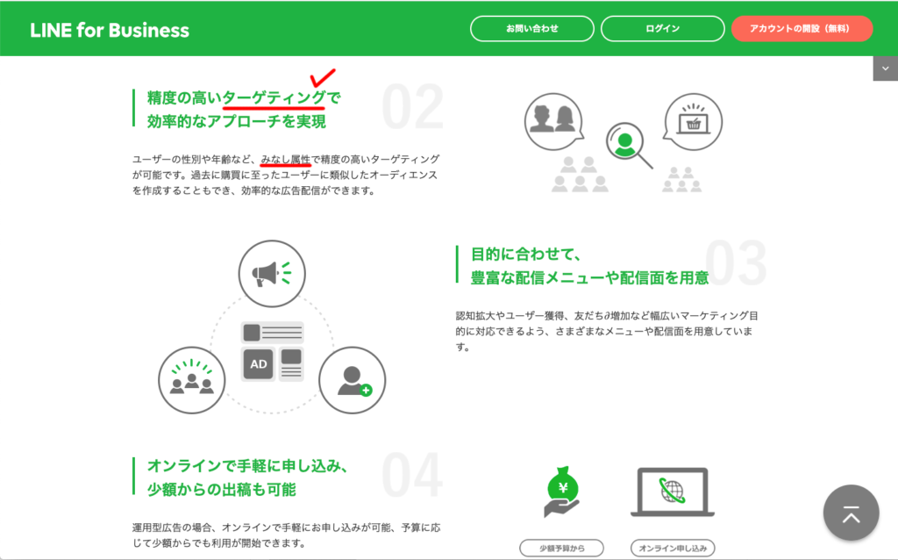

#035_ターゲティングとは？

こんにちは！matsumotoです。おかげさまで、最近LINE公式アカウントに関するご相談が多く、忙しい毎日を過ごしています。大企業やIT関連以外でも、LINE公式アカウントに活路を見出してくださるお客様がいらっしゃること、大変うれしく思います。
これまで「LINE広告」や「ステップ配信」などの解説をした時、ふつうに「属性」や「ターゲット」という言葉を使ってきましたが、読者の皆様にはすんなりご理解いただけましたでしょうか？
「そんな基本的なことぐらいわかってる！」とおっしゃる方がいる一方で、「聞いたことはあるけど実はあまりよく分からない…」「横文字は嫌い」という方もおられたので、今回は「マーケティングの大前提」ともいえる「ターゲティング」について解説していきたいと思います！
（１）ターゲティングとは？
LINE公式アカウントオフィシャルサイトでも、「属性」「みなし属性」という言葉が頻出します。属性とは、性別や年齢ほか、「自社がお客様とみなす」層の特徴を詳細に挙げたものです。自社の商品やサービスを購入してくれるお客様とはどんな人なのか？という特徴を、ひとつずつ突きつめていくのです。この作業を「ターゲティング」と呼びます。
「客はこっちが選ぶものじゃない」とか、「うちの商品を気に入って買って下さるなら誰でもいい」という考え方もあります。しかし、これでは将来いつお客様の気が変わって、商売が立ち行かなくなるかもしれません。そういった事態を防ぐためにも、戦略的に自社のお客様を分析する必要があります。
（２）ターゲティングの実例
例を挙げて説明していきましょう。お客様が実際にお店を訪れる小売店や、ヘアサロンなどは、特徴が分かりやすくターゲティングしやすい例となります。
◯高級和菓子店…
最近では「#萌え断」などというハッシュタグもあらわれ、糸できれいに二つに切ることが出来る「フルーツ大福」などがインスタグラムを賑わせていますが、基本的に現代の若者が一個800〜5,000円もする高価な和菓子を購入することは少ないです。
それよりもは、「贈り物」「お持たせ」として、少しお金を払ってでも「良いものを贈りたい」と考える中高年層の女性客が圧倒的に多いでしょう。また、企業が取引先への挨拶として利用することもありますが、それも直接商品を買うのは事務の女性社員、という場合が多いです。
というわけで、一般的に高級和菓子店のターゲットは以下のように絞り込む（＝ターゲティング）ことができます。
ターゲット➡️中高年・女性・比較的経済的余裕がある・手土産、季節の贈り物などに利用
◯ヘアサロン…
こちらは、ターゲティングが大変重要な業種です。自分の得意とする分野を求める顧客を慎重に見極めなければいけません。それぞれの特徴に合わせてターゲティングしてみましょう。
①ピンクやブルーなど「多種多様なヘアカラーを施すのが得意」➡️（ターゲット）10〜30代・男女・客単価は7,000〜3万円程度
②「似合わせカット・ヘッドスパなどが得意」➡️（ターゲット）20代〜50代・女性・客単価は約1万円〜3万円程度
③「白髪隠し・髪と地肌を痛めないカラーリングが得意」➡️（ターゲット）40代〜・女性・客単価は約3,000円〜2万円代程度
◯中古車販売…
一部でカーシェアリングやレンタカーを利用する若者が増えるなど、車を「所有する人」が減っています。しかし、そんな中でも「車が大好き」「エリア的に車がないと生活できない」という人も確実にいます。そういった人たちを中心に、中古車人気が上がっています。こちらは、少しターゲティングが難しい例です。
ターゲット➡️18歳〜高齢者まで・男女・客単価は概ね100万円以下
このように「この条件にもれる人も少しはいるけど…」という曖昧さを省き、あくまでメインの顧客を浮かべてその特徴を明らかにしていくのが「ターゲティング」なのです。
（３）ターゲテイングを利用する場面

LINE公式アカウントのオフィシャルサイトでも、「ターゲティング」の言葉が記載されています。上に述べたように、自社の顧客の特徴がわかったら「属性」としてLINE広告やステップ配信などで活用していきます。どちらも「属性」について選択する欄がありますので、そこで年代や性別、その他の特徴を決め打ちしていくのです。
（４）トライ＆エラーが大切
ここで重要なのが、「しっかりと属性を絞り込む」ことです。上の中古車販売の例で言うと、車が必要な地域では住人すべてが顧客となりうるわけですが、たとえば中古車のカスタマイズが得意なお店ならカスタマイズをしたがる客の年齢をもっと絞り込まねばなりません（10代〜30歳程度がメイン層）。
また、ご家庭でご主人と奥さんがそれぞれ一台ずつ車を所有する場合もあるでしょう。「奥さんの車は軽自動車でいい」というケースも多いので、軽自動車を多く取り扱うお店であれば「女性向け」の発信を意識する必要があります。
ただ、しっかり絞り込んで広告を打てば必ず売り上げが上がる、という訳でもありません。皆さんが一番怖いのは、「ターゲティングを見誤ってお客をとりこぼす」ことではないでしょうか。これは、もちろん起こりえます。
しかし、正しいターゲティングを行えば、顧客にとっても「興味がある・知りたかった情報」をあなたのアカウントから受け取ることが出来、成約率の大幅アップを見込めます！（平均的なLINE広告から得られる成約率はおよそ1%程度）
最初からいきなり完璧なターゲティングを行うことは誰にとっても難しいので「トライ＆エラーを重ねて正解を探る」と考えれば、自分にも出来そうな気がしませんか？
地味で手間のかかる作業ではありますが、最適解を見つけたときは無敵です！仕事の合間時間で大丈夫なので、まだお客様の属性を明確にしていない方はぜひ取り組んでみてください。
ちなみに、matsumotoおすすめのLステップを使えば、友だち登録時にお客様の興味のある項目をぽちぽちとタップしてもらう「アンケート」機能を使ってお客様の属性など詳細な顧客情報が手に入ります。そこから、どのような属性の人の成約率が高いか、というデータが蓄積されていきます。
これにより、ターゲティングの精度が格段に上がります！やはり店舗型の事業にはLステップ必須ですね！
まずはLINE公式アカウントを開設しましょう！
●LINE公式アカウントの開設方法はこちら
●LINE公式アカウントをオススメする理由はこち
●LINE公式アカウントでできることはこちら
●Lステップでできることはこちら